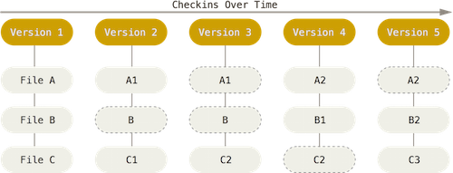
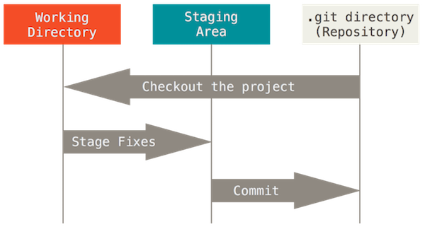

Introducing Git
What is Git?
-
Git is a Version Control System
What is "version control"?
-
Version control is a system that records changes to a file or set of files over time so that you can recall specific versions later.
Just like a time machine
Why should I care?
-
It allows you to:
- revert files back to a previous state
- revert the entire project
- compare changes over time
- see who modified something that might be causing a problem
-
generally, if you screw things up, you can easily recover
-
and of course you can't overwrite each others work
OMG!!!
How does this work?
- Git is a Distributed Version Control System, where clients don’t just check out the latest snapshot of the files: they fully mirror the repository.
- If any server dies repositories can be copied back up to the server to restore it.
Snapshots baby!
- others: information as a list of file-based changes
- Git: "set of snapshots of a miniature filesystem"
- Git takes a picture of what all your files look like at that moment and stores a reference to that snapshot. To be efficient, if files have not changed, Git doesn’t store the file again, just a link to the previous identical file it has already stored.
- 
Nearly every operation is local
- Remember? You have the whole database mirrored.
- For example, to browse the history of the project.
- You can see the changes introduced between the current version of a file and the file a month ago instantly.
The three states
- comitted (safely stored in local database)
- modified (you changed it, but not stored in database yet)
- staged (changed and marked to be in next commit)
- + pushed (copied to the remote repository from local database)
- three main sections of a Git project: the Git directory, the working directory, and the staging area
- 
Recording changes to the repository

- files can be in two states: tracked or untracked
- tracked files were in the last snapshot; they either unmodified, modified, or staged
- as you edit files, Git sees them as modified, because you’ve changed them since your last commit
- stage modified files and then commit all your staged changes, and the cycle repeats
You may start to feel like...
Ignoring files
- Often, you’ll have a class of files that you don’t want Git to automatically add or even show you as being untracked.
- In such cases, you can create a file listing patterns to match them named .gitignore.
-
/.idea prepros.cfg *.iml *.sublime-project .DS_Store /node_modules
Skipping the staging area
Although it can be amazingly useful for crafting commits exactly how you want them, the staging area is sometimes a bit more complex than you need in your workflow.
If you want to skip the staging area, Git provides a simple shortcut.
-
$ git commit -amakes Git automatically stage every file that is already tracked before doing the commit
Basic Git workflow
Weapons of choice
Luckily there are many good tools to use Git, so no need to type commands into terminal any more
We prefer IntelliJ IDEA, which:
- is much more then a simple Git client (overkill as sh!t) :(
- but...
- has great graphical git interface
- has powerful diff and merge tools
- and of course as a (extremely powerful) code editor itself, you don't need to use an external editor
-
Thank you!